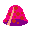
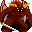
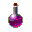

Bestiary
- Imp - Standard issue demon. Makes itself look threatening and acts cocky to compensate for its mediocre strength. Grew wings to avoid dealing with its aquaphobia. Can move over water tiles, but is a little nervous about doing so. Average health and low attack. Average aggro range.
- Wraith - Agitated apparition who found a cool cloak. Competes a lot with Specter but they're actually close buddies. Can move over water tiles. Low health but very high attack. Average aggro range.
- Gorgon - Judgmental lady with snakes for hair. Very skilled with detail-oriented work, but insecure because she accidentally turns all her dates into stone. Her snakes provide her with invaluable moral support. High health with average attack. High aggro range.
- Gelatinous mound doing part-time dungeon work while it fills its portfolio. Changed its name because "Slime" just didn't feel right. Hard worker and fiscally responsible. Loves when friends bring it Jell-O. Low health and attack. Average aggro range.
- Honest fellow just trying to make ends meet. Finds his name a bit hurtful but whatever, it's fine. Does volunteer work on the weekends and enjoys interior decorating. Average health and high attack. Below average aggro range.
- Big lizard who carries the weight of his reputation. Feels a little basic because he's not a drake or a wyvern. Gets a little annoyed when his peers ask him to breathe fire. Needs glasses but won't admit it. Above average health and attack. Low aggro range.
- Huge fiend and arm-wrestling fanatic. Has a healthy diet and consistent workout routine. Was once offered a bodybuilding gig but turned it down because he feels the cosmetic industry is responsible for a lot of unhealthy cultural perceptions about beauty. Will absolutely carry around his friends if they ask him to. Massive health and high attack. Average aggro range. Weak to explosions because the smoke aggravates his asthma.
- Poltergeist who found a suit of armor with some nifty colors. A bit of a drifter, but there for its friends when they need it. Enjoys dungeon work and plans to pursue it as a career path. High health and low attack. Average aggro range.
- Ghostly entity who spends her afterlife haunting the dungeon. Ran a pretty successful business when she was alive, but doesn't really miss it. Personable in afterlife as she was in life. Good friend and rival of Wraith. Can move over water AND wall tiles. Thrown items will pass through it. Low health and average attack. High aggro range.
- ??? - Who let him in here?
- Red Elixir - (Consumable) A rich elixir that restores 25 health. Use wisely.
- Loot Bag - (Consumable) An ordinary bag that contains a random basic item! (May contain: Apple, Magenta Concoction, Calling Bell, Gem, Pale Tincture, Loot Bag)
- Key - (Consumable) A special device generally made of common metal that is used in the operation of locks (such as to lock or unlock it). Consists of a bit, which slides into a keyway that distinguishes between different keys, and a bow, which allows the user to apply torque to the key. Opens one door.
- Pot - (Equipment) Excellent for making broths and stocks, which usually serve as the base for more complex recipes. You can also wear it on your head! Reduces all incoming damage by 1 (multiple pots stack). A must-have, both for chefs and those traversing dungeons.
- Rain Boots - (Equipment) A stylish pair of boots that will protect your feet from dissolving on contact with water. Allows the holder to traverse water tiles!
- Magenta Concoction - (Consumable) An unstable brew that explodes when thrown. Deals 10-15 damage. Use with care!
- Trumpet - (Reusable) Makes a fun sound. Useless otherwise.
- Ring - (Equipment) A fairly ordinary ring. Will probably hurt if you really dig it in when you hit things. Increases your base attack by 1 (multiple rings stack).
- Strange Bell - (Consumable) Warps all adjacent monsters to the staircase. Doesn't make any noise after you ring it once and this really bothers you.
- Gem - (Consumable) A valuable and sharp gemstone. Looks pretty and refracts light in an interesting manner. Can be thrown at enemies for minor damage.
- Pale Brew - (Consumable) An airy brew that can be thrown to blow an enemy away! Enemies fly in straight line and take damage upon contact with walls or other enemies.


